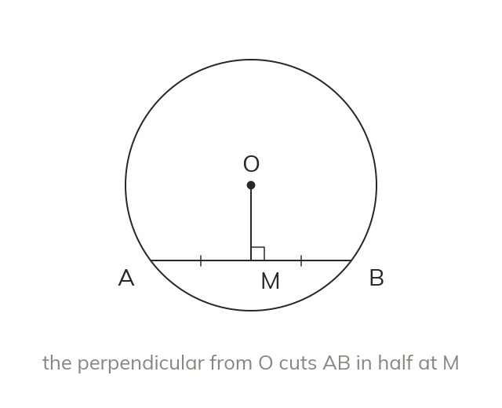

The perpendicular halves the chord
A perpendicular from the centre cuts a chord in half. A line from the centre to a chord's midpoint meets it at right angles.
A line from the centre at right angles to a chord cuts the chord in half. And the line from the centre to a chord's midpoint meets it at right angles.